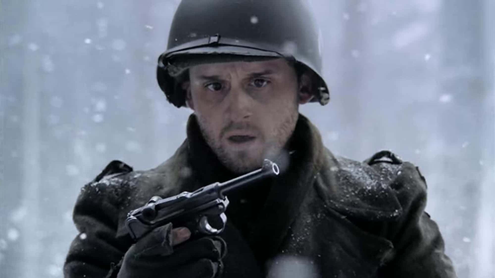
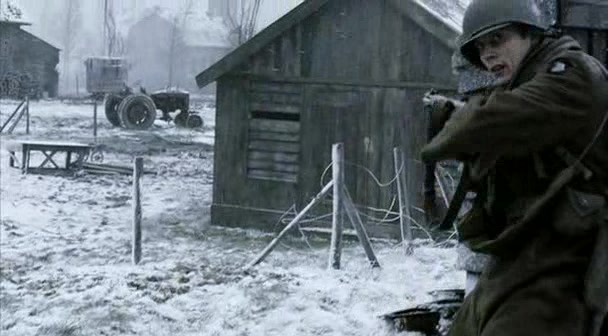
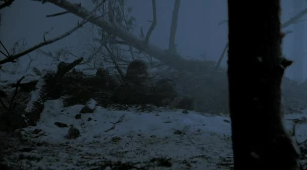
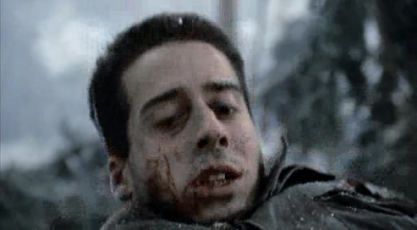
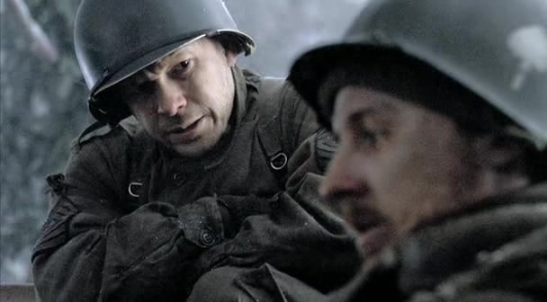
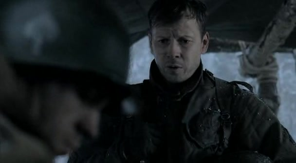
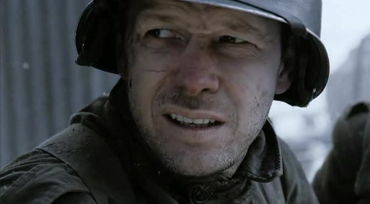
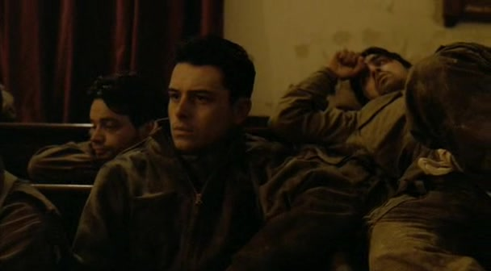

01
林区推进／进攻福伊之前战利品突然成为危险

霍布勒展示缴获的鲁格手枪 · 第 7 集画面剧情事实霍布勒得到一直想要的鲁格手枪，随后因意外走火受伤并死亡。利普顿的旁白把这件突发事故，放进连队日益缩减的名单里。[3]
这一场为什么重要 · 个人解读
这一段让死亡脱离了观众熟悉的战斗逻辑：没有壮烈冲锋，也没有可预测的对手。一个小小的私人愿望，转眼成了旁人必须收拾的遗物。它为全集建立的不只是危险感，还有失去控制的感觉。

崩溃边缘 · 1945 年 1 月｜比利时 Bois Jacques 森林、Foy 与 Rachamps
第七集从利普顿的视角观察一支连队的承受极限。巴斯托涅的围困结束，并没有结束林中的寒冷、炮击与损失；进攻福伊前，士兵还必须面对一个让他们缺乏信心的连长。斯皮尔斯的接替是最醒目的转折，但让这次转折能够发生的，还有利普顿此前每一次巡视、安抚和提醒。本篇只涉及第七集及此前剧情，分析集中于电视剧如何呈现领导与创伤；戴克的失能和斯皮尔斯的行动是剧中叙述，不能单凭这些镜头裁定真实人物的完整经历。[1]
本页范围回顾本集与必要的前集背景；以下主题分析针对剧集呈现，历史补充另作说明。
8 个关键场景，连起本集的因果与变化。
按剧中叙事顺序排列。批注默认展开，可直接阅读场景的意义。

霍布勒展示缴获的鲁格手枪 · 第 7 集画面剧情事实霍布勒得到一直想要的鲁格手枪，随后因意外走火受伤并死亡。利普顿的旁白把这件突发事故，放进连队日益缩减的名单里。[3]
这一段让死亡脱离了观众熟悉的战斗逻辑：没有壮烈冲锋，也没有可预测的对手。一个小小的私人愿望，转眼成了旁人必须收拾的遗物。它为全集建立的不只是危险感，还有失去控制的感觉。

本集雪林阵地画面，作为巡视与指挥缺位的环境配图；并非戴克离开的具体镜头。剧情事实戴克时常离开阵地，把现场事务交给利普顿。利普顿巡视散兵坑，了解士兵的状况，同时听到大家对连长的不满。[2]
军衔与实际作用在这里分开了。利普顿没有连长的职位，却不断接住连长留下的工作。他先确认人还在、还能行动，再把分散的人维系成队伍。这样的领导没有壮观场面，价值却会在后面的混乱中显现。

瓜奈尔在雪林中负伤后的近景；本集炮击伤亡场面，不作为医疗细节的历史证明。剧情事实托伊与前去帮助他的瓜奈尔在炮击中严重受伤；目睹好友遭遇的巴克随后离开前线。另一轮炮击夺走马克与彭卡拉。[5]
炮击把同一个损失沿关系网继续传递。有人失去身体的一部分，有人失去再承受一次的能力，有人失去可以说笑的伙伴。把巴克的离队简单理解为软弱，会错过本集最重要的观察：创伤并不只属于直接中弹的人。

利普顿与温特斯在森林中交谈；本集攻击准备阶段的画面。剧情事实利普顿制止鲁兹继续模仿戴克，又向温特斯明确表达对连长的担忧。他相信士兵已经准备好，却不相信戴克能够带领他们。[2]
他在两种责任之间寻找位置：不让嘲讽耗尽仅剩的凝聚力，也不让维护纪律变成掩盖危险。面向士兵，他让抱怨停下来；面向有权处理问题的人，他把担忧说出来。同样的克制，服务于同一个目的——让人活下来。

温特斯观察福伊战斗的本集近景；作为上级观察视角配图，非戴克的肖像。剧情事实进攻中，戴克叫停队伍，没能及时形成有效行动。温特斯看到攻击陷入困境，想亲自上前，却被辛克制止；他随即命令斯皮尔斯接替。[2]
这段把指挥问题变成一个肉眼可见的空间问题：人停在缺少掩护的地方，每多等待一会儿都要付出代价。温特斯的情感让他想跑回原来的连队，但营级责任要求他继续统筹。找到能够接手的人，成为他此时必须作出的决定。
剧情事实斯皮尔斯接替后先向利普顿询问现场状况，重新部署攻击。为联系另一支连队，他穿过德军所在区域，又返回 E 连一侧。[5]
奔跑非常醒目，但它并不是这段唯一的领导行为。在冒险之前，他先听取掌握一线情况的利普顿，明确火力与推进方向。与戴克形成对照的，不只是胆量，还有把信息变成决定、把决定变成共同动作的速度。

斯皮尔斯在福伊战斗中的近景，作为战后清理阶段代表配图；不是狙击手视角。剧情事实战斗接近尾声时，狙击手仍造成伤亡。利普顿冒险引出其位置，夏弗蒂消除威胁；连队随后继续处理伤员与俘虏。[3]
胜利的感觉刚出现，危险又重新进入画面。这让观众很难把福伊当成一个干净的句号：关键决策挽救了连队，但没能取消战争的最后一发子弹。利普顿也没有退回纯粹的旁白位置，他仍亲自参与风险。

修道院内休息的 E 连士兵；本集结尾合唱场景。剧情事实经过后续推进，E 连在修道院度过一个室内的夜晚。利普顿回顾连队损失，斯皮尔斯肯定他的领导作用，并告诉他战地委任已获批准。[5]
暖色灯光与歌声并没有抵消前面的冷色雪林；它们只是让疲惫的人暂时停止动作。名单中的缺席，把一次成功的攻击重新放回损耗的尺度。对利普顿的认可则为这一集找到另一种结尾：长期维系他人的工作，终于被别人看见。
切换阶段，点人物或关系，阅读具体证据。
指挥缺席，利普顿维持日常秩序。
用具体场景对照本集的两种处境。
在攻击发生之前，持续照顾士气、传递状况、把人留在共同的行动里。
在关键时刻接受现场信息、作出决定，并带领连队重新推进。
逐个散兵坑、逐次谈话，累积可以继续作战的信任。
↔现场受阻后立即接手，把拖延中的攻击恢复为动作。
观察疲惫与恐惧，并向温特斯反馈具体担忧。
↔先问利普顿现场状态，再安排火力与推进。
工作分散在整集中，直到结尾才被明确说出。
↔奔跑与接替集中在高潮，立即成为士兵共同见证。
斯皮尔斯接过的不是一支完全失去组织的队伍：利普顿已经把它维系到能够继续接令的状态。两人的作用发生在不同时间尺度上，因此不能只用最醒目的勇敢镜头，衡量全连的领导贡献。
短句原文、中文自译，以及它在这一刻的分量。
“Fear is poison in combat.”恐惧是战斗中的毒药。
他观察到士兵濒临极限，担忧恐惧会在队伍中扩散。
这句话说明他为何努力维持秩序，也显出这项工作的代价：他自己同样害怕。可以理解其战场语境，却不必把压抑恐惧当作处理创伤的普遍答案。[3]
英文短句核对来源列在篇末；中文为本页自译。配图的场景与出处随卡片标注。
只沿本集与此前的线索回看，不揭示后续情节。
剧情事实利普顿区分戴克到场与实际带领；斯皮尔斯接手后主动询问现场。[2]
个人解读身体出现只是起点。领导在本集被拍成一组可观察的行为：听取、决定、组织、共同承担。
剧情事实霍布勒死于意外；利普顿与鲁兹躲过哑弹，附近战友却未能生还。[3]
个人解读这些并置打破“活下来就证明更强”的简单解释。角色的判断确实有用，但他们始终处在无法全部掌控的风险里。
剧情事实结尾在合唱声中回顾损失，画面中的战友逐渐消失。[5]
个人解读剪辑让缺席成为可以看见的东西。名单并非背景统计，而是把热闹的集体重新变回一个个有名字的人，也给本集胜利留下无法抹去的重量。
福伊被拿下，连队得到能够执行指挥的新连长，利普顿的付出获得正式认可。但这集最终留在观众面前的，是短暂休息中的空位。斯皮尔斯解决了眼前的指挥危机；利普顿让我们看到，仍在继续的队伍已经改变。合唱可以给他们一个安静的夜晚，不能把失去的人带回来。
回到档案首页 ↑